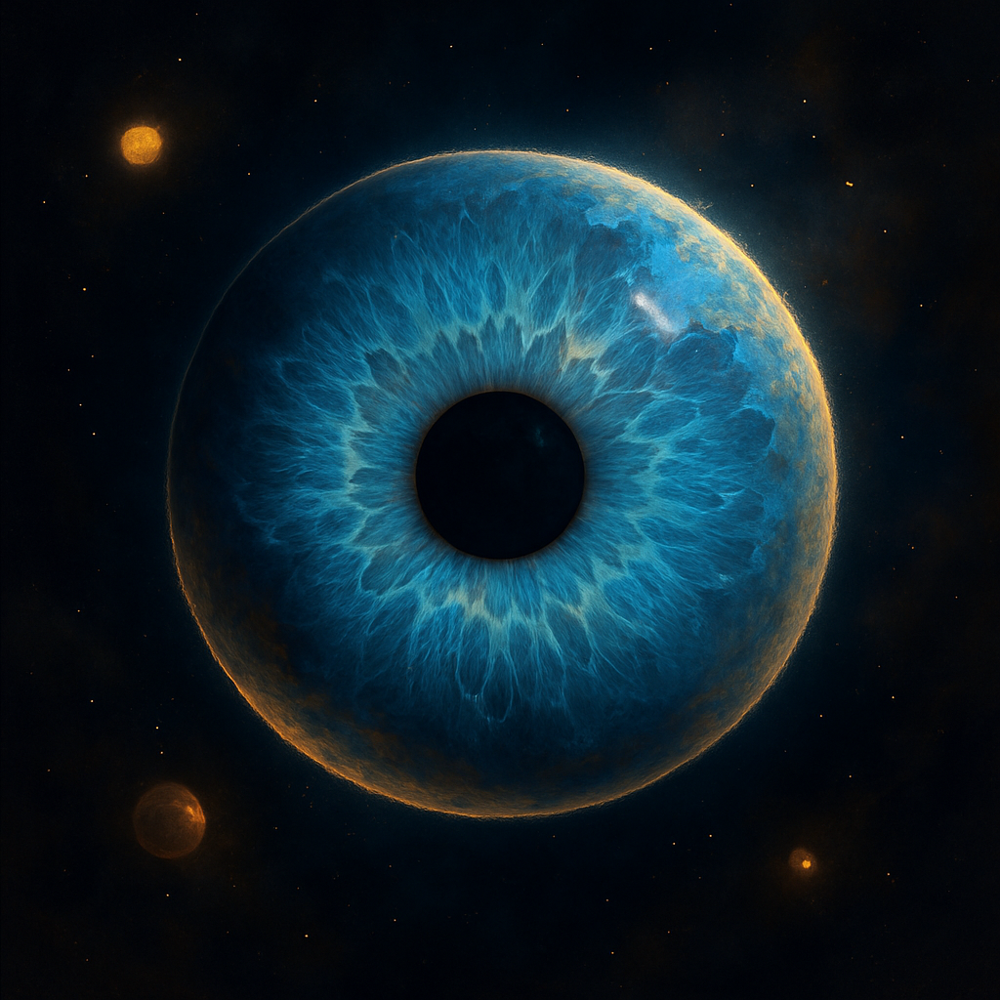

Projekte
Car — BMW F31
Ich kümmere mich gern um mein Auto, pflege es regelmäßig und individualisiere es mit Liebe zum Detail. Technik verstehe ich nicht nur, ich schätze sie — genauso wie eine saubere Ästhetik und ein stimmiges Gesamtbild.
AI — Creative Vision

Ich arbeite gern mit KI, weil sie neue Ideen und Möglichkeiten eröffnet. Mich reizt es, ihre Grenzen auszutesten und herauszufinden, was heute schon machbar ist.
Bike — Mountainbike

Ich war schon immer gern mit dem Mountainbike unterwegs und habe mein Bike kürzlich wieder auf Vordermann gebracht. Jetzt freue ich mich auf den Frühling, um endlich wieder loszufahren — am liebsten auch Downhill.